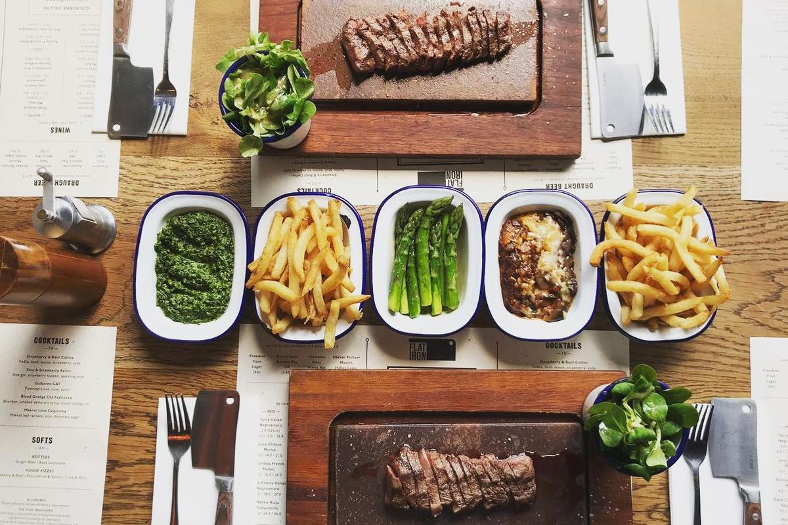

Where to Eat in London
I have yet to find a restaurant or pub with good British food. I'm convinced I just haven't found a place that cooks British food with love. I've had fish and chips, a Sunday roast, afternoon tea, and the traditional English breakfast — which all have not been a favorite of mine, and I'd like to think that I'm not picky and am easy to please. Therefore, these are things I don’t typically advise on as I haven’t found a good place for any of these dishes, but I don’t discourage others from still trying it and doing some research as to where there may be good British food.
Finding good food in London is a challenge I enjoy. Here are the places I recommend.

Flat Iron (Multiple Locations)
Cuisine: Modern British
Great food for an affordable price given how expensive London can be. A tasty cut of meat that is always tender. Mac and cheese, creamed spinach, and roasted aubergine are my favorites. Chips are cooked in beef dripping, and they have a delicious lime mint soda made fresh to order in house. Every meal starts with complimentary popcorn and ends with free ice cream. If you're not in the mood for dessert, you get a cute Flat Iron logo token (a butcher’s knife) that you can redeem later.
Visit Flat Iron

Frigideira (Notting Hill)
Cuisine: Brazilian
I personally go here for their Picanha Frigideira, which is honestly good for up to 3–4 people even though they advertise it for 2. You get staple Brazilian sides with a juicy plate of picanha. I love their fried plantains and caipibeer (a caipirinha-beer blend). Their passionfruit mousse is a must for dessert!
Visit Frigideira

Sonora Taqueria (Stoke Newington)
Cuisine: Mexican
I came across this place while running errands near my partner’s neighborhood — literally before they opened! Before that, I had tried tacos at 3 different restaurants that were all bad. Los Angeles spoiled me with access to decent tacos anywhere. But Sonora Taqueria changed that. Their tacos de nopales and barbacoa are severely underhyped. They’re pricey compared to LA tacos, but worth every bite — especially when I’m feeling homesick.
Visit Sonora Taqueria

Polpo (Chelsea & Soho)
Cuisine: Venetian Italian
I’ve never actually dined in at Polpo, but my partner’s parents work there and bring food home. They have a seasonal menu with a few year-round staples. I love their chili prawns, croquettes, pizzas, and focaccia. They also grind their own coffee beans — it’s the best coffee I’ve had.
Visit Polpo